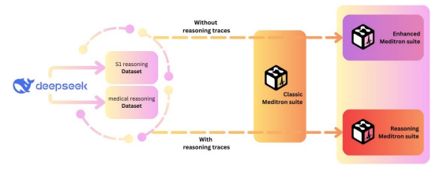
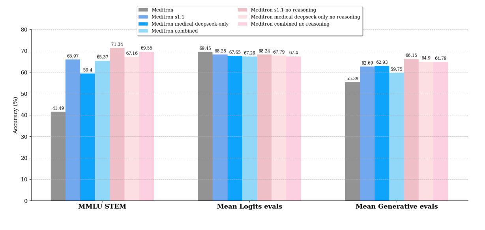

Xavier Theimer-Lienhard
Enhancing Meditron Capabilites
Methods

Finetuned Meditron-3-Qwen-7b and Meditron-3-8b with reasoning distillation datasets. Performed qualitative comparison between medical reasoning datasets versus mathematical reasoning datasets. We also included and excluded the reasoning traces to evaluate their impact.
Results

Trained medical reasoning models with distillation from large reasoning models. Achieved 13% and 30% improvements on reasoning benchmarks for Meditron-3-Qwen-7b and Meditron-3-8b, respectively. Drove 5% and 9% improvements on medical benchmarks for Meditron-3-Qwen-7b and Meditron3-8b, respectively.